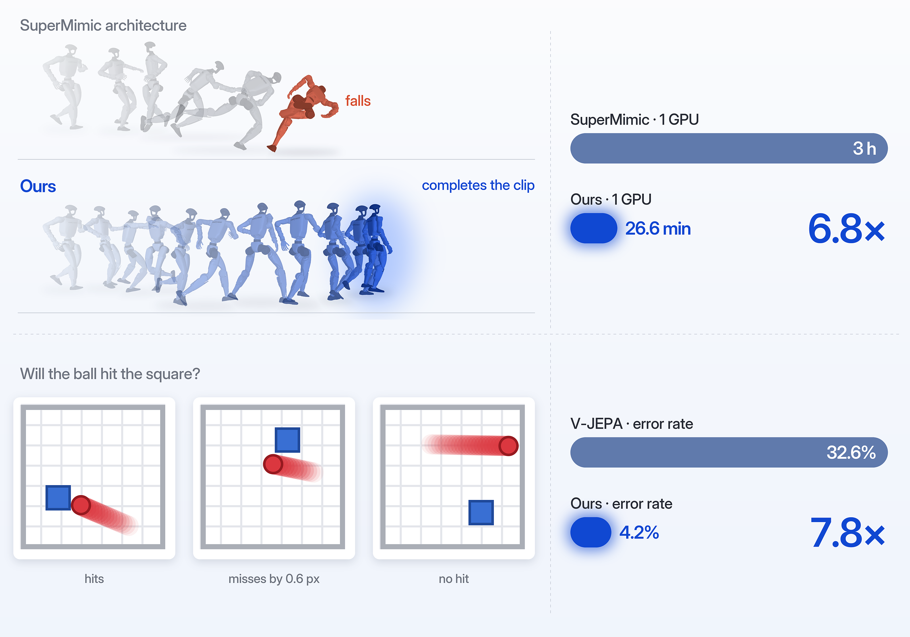
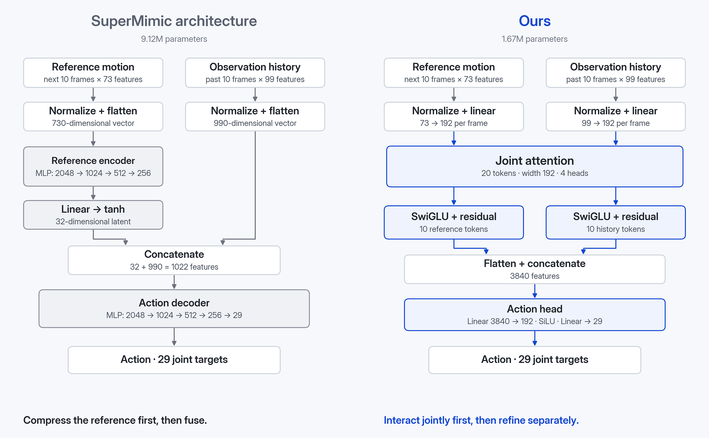
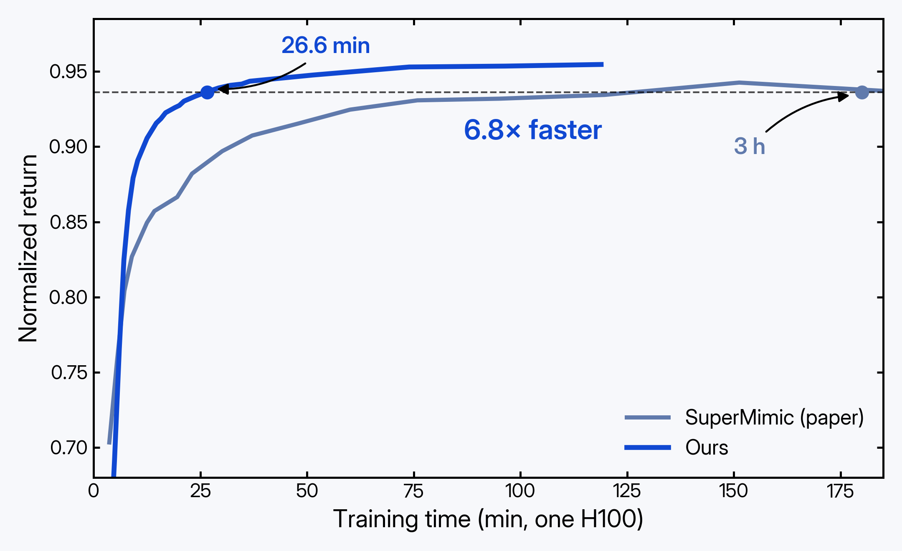
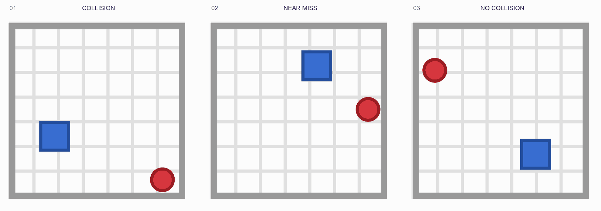
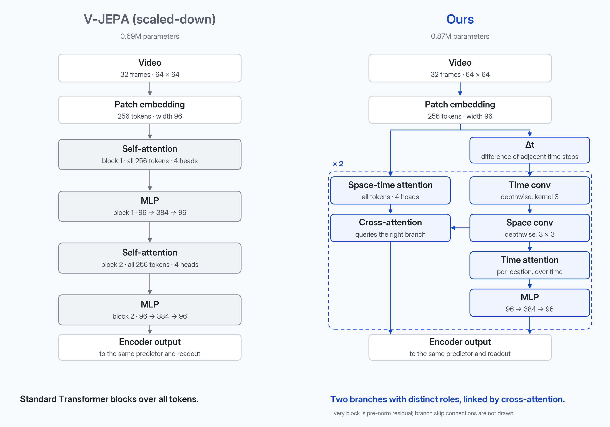
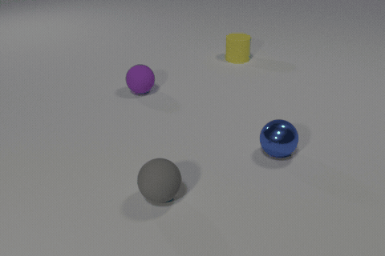

只换架构，世界模型还能强多少？
1 元环智能2 清华大学人工智能学院3 复旦大学物理学系
SuperMimic 借助可微世界模型训练人形机器人，把 SONIC 需要 128 张 GPU 跑 7 天的训练，缩短到 1 张 GPU 跑 3 小时。我们重新设计了它的策略网络架构，结合一定的工程优化，又把这 3 小时缩短到了 26.6 分钟。
V-JEPA 是 Meta 提出的视频世界模型：它通过预测视频中被遮住的部分，从大量无标注视频中学习物理规律。在一个碰撞预测任务上，我们仅更换其编码器的架构，就把准确率从 67% 提升到了 96%。
两个结果说明了同一件事：在数据、规模和训练方法之外，世界模型的架构本身还远没有被挖掘充分。

被忽略的一环
过去两年，世界模型进展飞快：V-JEPA 2 从海量视频中学习物理直觉，Genie 能生成可交互的虚拟世界，SuperMimic 用一个可微的世界模型，让人形机器人在单张 GPU 上学会十几万段动作。
推动这些进展的，主要是更多的数据、更大的规模、更好的训练目标和训练方法。相比之下，网络架构本身很少成为主角：SuperMimic 的策略网络是一个多层 MLP，V-JEPA 的编码器是标准的 ViT。架构往往是"够用就行"的默认选择，而不是被认真打磨的对象。
我们想知道：如果只换架构，世界模型还能强多少？
过去一段时间，我们一直在构建一个元模型：给定一个任务，它会为这个任务设计专门的网络架构。下面两个例子里的新架构，都是由它设计的。
例一：SuperMimic，人形机器人全身控制
SuperMimic 解决的是动作跟踪问题：给定一段人类动作，让 Unitree G1 人形机器人在物理仿真里把它做出来。它先学习一个可微的世界模型，预测机器人执行某个动作后的下一个状态；策略网络在这个世界模型的"想象"中展开 32 步，再把跟踪误差直接反向传播回策略。凭借这套方法，它用 1 张 H100 训练 3 小时，就超过了 SONIC 用 128 张 GPU 训练 7 天的效果。
原架构：先压缩，再决策
策略每一步要看两样东西：接下来 10 帧的参考动作（机器人"应该"怎么动），以及过去 10 帧的本体观测（机器人"实际"在怎么动）。原架构先用一个四层 MLP，把 10 帧参考动作压缩成一个 32 维向量；再把它和展平的历史观测拼接，交给另一个四层 MLP，输出 29 个关节的目标角度。整个策略约 912 万参数。
新架构：先联合交互，再分开精炼
我们把 10 帧参考动作和 10 帧历史观测各自变成 10 个 token，每个 token 对应一帧。20 个 token 先一起做一次 joint attention：参考帧和历史帧可以互相查看，但两组各用自己的 Q/K/V 投影，保留各自的身份。随后两组分开，各自经过一层 SwiGLU 精炼。最后把所有 token 展平，经过一个小 MLP 输出动作。
新架构没有 32 维瓶颈，参数却只有 167 万，约为原来的五分之一。

结果
我们让两个架构使用完全相同的训练配方，各训练 45 分钟后评测（表 1）。评测指标是 return，它衡量机器人把动作跟踪得有多准，满分为 1。
表 1 同一训练配方下两种策略架构的对比。学习率 8e-4、EMA 0.98，单张 A100 训练 45 分钟，在 1 万段分层抽样的动作上评测；return 满分为 1。
| 策略架构 | 平均 return | 参数量 |
|---|---|---|
| SuperMimic 原架构 | 0.897 | 9.12M |
| 我们的架构 | 0.938 | 1.67M |
同样 45 分钟，原架构因为单步更快，多训练了 1000 多步，return 却仍然明显更低。
在这套配方上再做一些工程优化，新架构在单张 H100 上只需 26.6 分钟，return 就达到了 SuperMimic 训练 3 小时的水平（图 3）。图 1 左边是一个具体例子：在"奔跑中侧身闪避、转身 270° 后继续跑"这段动作上，原架构中途摔倒，新架构完整跑完。

为什么有效
原架构隐含了一个要求：策略在看到机器人当前状态之前，就要先把未来 10 帧动作概括成一个 32 维向量。可是未来动作里哪些信息重要，恰恰取决于机器人此刻的状态。直觉上，快要失去平衡时，最该关注的是接下来一两帧怎么落脚；姿态稳定时，则可以看得更远。
新架构把这个顺序倒了过来：先让历史帧和参考帧直接交互，每一帧历史观测都能找到与它相关的未来帧，然后两组再各自精炼。信息的取舍发生在"看过对方之后"，而不是之前。
例二：视频世界模型，预测碰撞
第二个例子来自视频世界模型。我们搭了一个简单而干净的 2D 物理世界：画面里有一个匀速运动的红球和一个静止的蓝色方块。模型看前 32 帧，要判断接下来 16 帧里红球会不会撞上方块。会撞和不会撞的场景各占一半，其中不少只是擦边而过，或者在最后几帧才撞上。

训练沿用 V-JEPA 的思路，分两步。先在 1 万段视频上做自监督预训练：遮住一部分画面，让模型在表征空间里预测被遮住的内容。预训练结束后冻结编码器，只在它的输出上训练一个小的读出头来判断是否碰撞。碰撞预测得准不准，反映的是编码器有没有从视频里学到物理规律。
原架构：标准的 Transformer
基线是一个缩小版的 V-JEPA：视频被切成时空 patch，每个 patch 变成一个 token，再经过标准的 Transformer 编码器。所有 token 在同一个序列里做自注意力，物体的位置、运动和相互关系，都要靠注意力自己去学。编码器和预测器加起来约 69 万参数。
新架构：两条支路，各有分工，再相互查询
新架构的输入和基线完全相同，都是同一份 patch token。不同在于 token 进入网络之后怎么被处理（图 5）：
- 一条支路先做一次时间差分 Δt，即相邻两个时刻的 token 相减（相当于一个感受野为 2 个时刻、权重固定为 [−1, +1] 的时间卷积），然后依次经过沿时间方向的卷积、沿空间方向的卷积、只沿时间轴的自注意力，最后是一个 MLP。
- 另一条支路直接从 patch token 出发，先在所有时空 token 上做自注意力，再用一次 cross-attention 去查询第一条支路的特征。
两条支路组成的 cell 重复两次，最后合并输出，替换掉原来的 Transformer 编码器。编码器和预测器加起来约 87 万参数。

结果
两个模型使用相同的预训练配方（200 个 epoch）、相同的读出头和相同的数据划分。读出头的训练轮数按验证集选定后，在 1000 段从未见过的测试视频上评测（表 2）。
表 2 碰撞预测的测试集准确率。两个模型的预训练配方、读出头和数据划分完全相同；测试集共 1000 段视频，会撞与不会撞各 500 段。
| 编码器架构 | 准确率 | 错误率 | 参数量 |
|---|---|---|---|
| V-JEPA（缩小版） | 67.4% | 32.6% | 0.69M |
| 我们的架构 | 95.8% | 4.2% | 0.87M |
参数只多了约四分之一，错误率却降到了原来的约八分之一。
为什么有效
两个模型看到的信息完全一样：同一段视频、同一份 patch token。新架构没有引入任何额外的输入，区别只在于这些信息被怎样处理。
判断会不会碰撞，关键在于小球怎么运动：往哪个方向走、走多快、会不会经过方块所在的位置。这些信息本来就藏在相邻帧的差别里。原架构理论上也能把它算出来，但需要注意力在大量几乎一样的 token 中自己学会"比较相邻两帧"，学起来又慢又难。
新架构把这一步直接写进了结构：一条支路先比较相邻两帧，再用局部卷积和沿时间轴的注意力，把这些变化整理成连贯的运动；另一条支路处理整体的时空关系，并通过 cross-attention 去读取前一条支路整理好的运动信息。信息还是那些信息，只是被组织成了更适合回答"会不会撞"的形式。
换到 3D 场景：CLEVRER
这个架构是在我们自己搭的 2D 世界里设计出来的。为了检验它是否只适用于这个简单世界，我们把它原封不动地搬到了 CLEVRER 上（图 6）。CLEVRER 是一个常用的 3D 物理推理数据集：画面里有多个形状、颜色和材质各不相同的物体，在桌面上运动、相互碰撞，还伴随着阴影、反光和遮挡，比 2D 世界复杂得多。
我们没有在 CLEVRER 上重新设计架构，仅针对不同分辨率的视频调整了 patch 大小等超参数，然后在新数据上从头训练。基线换成了参数量相当的 V-JEPA 式 Transformer，任务仍然是看 32 帧、判断接下来 16 帧里会不会发生碰撞，两个模型使用相同的训练和评测协议（表 3）。

表 3 CLEVRER 上的碰撞预测准确率。我们的架构直接沿用 2D 世界中设计出的结构，没有做任何调整。
| 编码器架构 | 准确率 | 参数量 |
|---|---|---|
| V-JEPA（缩小版） | 60.8% | 0.81M |
| 我们的架构 | 78.4% | 0.76M |
在更复杂的 3D 场景里，新架构的参数更少，准确率却高出近 18 个百分点。显然它的优势并不局限于我们自己搭的 2D 世界。
小结
两个例子来自完全不同的世界模型：一个在物理仿真里控制人形机器人，一个从视频里学习物理规律。在这两个任务上，我们都没有改变输入、数据或训练目标，只是换了一个架构，结果就有了大幅提升：SuperMimic 的训练时间从 3 小时缩短到 26.6 分钟，碰撞预测的准确率从 67% 提升到 96%。
两个新架构也有相似之处。原架构都采用了"一刀切"的处理方式：SuperMimic 先把参考动作压缩成一个小向量，再和其他信息拼在一起；V-JEPA 把所有 token 放进同一种 block 里统一处理。新架构则让不同的信息先按各自的特点处理，再在合适的位置交互。这些设计都不复杂，用到的也都是常见的组件，却没有出现在原本的架构里。
这正是我们想说明的：除了数据、规模和训练方法，世界模型的架构设计同样有着很大的提升空间。
写在最后
这两个例子只是开始。我们正在把元模型用到更多的领域上，包括时间序列、AI for science、世界模型等等。后续结果会陆续分享。
如果你也对架构设计感兴趣，或者手上有想让元模型试一试的任务，欢迎和我们交流。